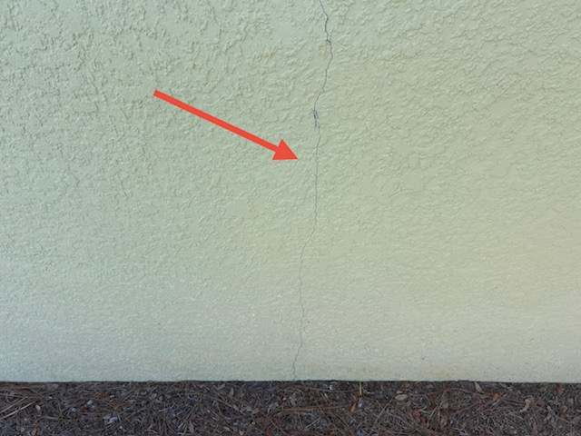

Drywall & Trim Separation
As wood framing in a new home dries and the foundation settles, drywall cracks and trim separation are frequent findings. These are more than cosmetic — they can indicate areas where the home is moving more than expected, and the builder is responsible for correction under warranty.

Exterior Stucco Cracking
Florida heat causes stucco to expand and contract significantly through the seasons. While small hairline cracks are common, larger cracks can lead to water intrusion and should be professionally sealed by the builder under warranty — before you are responsible for the repair cost.

HVAC Imbalance & Ductwork
Disconnected ducts or poor airflow in specific rooms are common findings during warranty inspections in Hernando County's newer developments. Identifying these issues before the warranty expires ensures your system runs efficiently for years to come — at no cost to you.